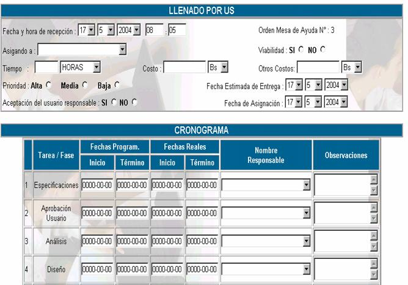
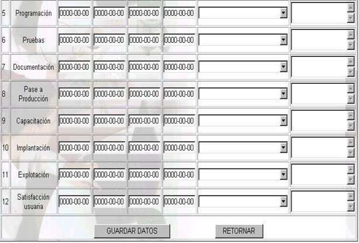
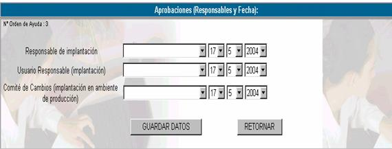
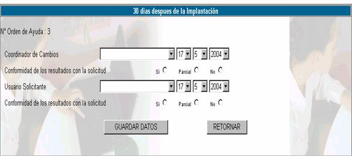

DESARROLLO Y MANTENIMIENTO
Esta opción muestra la siguiente pantalla:
Donde:
N° de Orden de mesa; especifica el número de orden de mesa, cuya asignación de solución se
realizó al área de Desarrollo y Mantenimiento.
Fecha y hora ; especifica la fecha y la hora en la cual se realizó
el envío de la orden de mesa.
Incidencia; describe la incidencia que se registró cuando se
envió la orden de mesa.
Formulario de llenado de US
Datos de solicitud; cuando se ingresa una incidencia de mantenimiento y
corrección de programas o desarrollo de nuevo software, entonces se debe dar
curso a esta orden a través del llenado de solicitud a sistemas. Para este
propósito haga click en el vinculo
LLENAR y le aparecerá la pantalla
siguiente:

Fecha y hora de recepción; registre
la fecha y la hora que ingresó al sistema la orden de mesa.
Asignado a; usted
puede realizar la asignación de la orden de mesa a una persona.
Tiempo; especificar el tiempo estimado de solución al problema
Costo; se
debe realizar un estudio de costos y anotar el total en este campo
Otros costos; anote
los costos adicionales que se puede tener.
Prioridad; la
unidad de sistemas debe definir el nivel de prioridad de la incidencia y ésta
puede ser alta, media o baja.
Viabilidad; en base a los costos se define si el desarrollo es
viable o no.
Fecha estimada de entrega; en base a
la dificultad de la solución y al tiempo estimado, se debe establecer una fecha
límite de entrega
Aceptación del usuario responsable; el usuario asignado para la solución de la
incidencia debe decidir si se hará responsable o no del desarrollo de la
solución.
Fecha de asignación;
especifique la fecha en la cual el usuario responsable acepta la asignación.
Tareas programadas; de acuerdo con el ciclo de vida del software, se
definen 12 etapas que se deben cumplir para desarrollar un sistema, estas son:
- Especificaciones:
Comprende la formulación de las necesidades usuarias, en esta etapa el
usuario debe lograr el pleno entendimiento de su requerimiento. Además de
las necesidades funcionales, el usuario definirá el tipo de seguridad
necesaria en función de la sensibilidad de la información que procesará el
sistema.
- Aprobación usuaria: Una
vez que se ha definido los requerimientos usuarios, estos últimos deberán
lograr las aprobaciones necesarias ya sea del jefe de unidad, intendencia
o Jefatura de Informática.
- Análisis de Factibilidad:
Comprende la revisión y correspondencia entre necesidades usuarias y
facilidades tecnológicas existentes o necesarias para lograr la
satisfacción del cliente.
- Diseño: Comprende la
elaboración del diseño lógico de la solución a implementar.
- Programación: Comprende
El mismo desarrollo del modelo físico: Bases de datos, programas,
interfases, etc.
- Pruebas: Comprende la
ejecución de diversas pruebas preestablecidas en función de la
sensibilidad del sistema o solución desarrollada. Comprende pruebas de
usuario final, pruebas de seguridad y pruebas de calidad realizadas en el
ambiente de prueba.
- Documentación: Comprende
la elaboración del manual técnico del usuario, del operador, de
entrenamiento y del programador.
- Pase a Producción:
Comprende El pase desde El ambiente de prueba al ambiente del usuario,
momento en que la responsabilidad recae sobre el administrador del
ambiente de Producción.
- Capacitación: Comprende
la capacitación a todos los usuarios finales.
- Implantación: Comprende
la instalación, creación de perfiles específicos por usuarios, etc.
- Explotación: Comprende
desde el momento en que el sistema comienza a emitir resultados que puedan
ser aceptados como oficiales.
- Satisfacción usuaria: Comprende
el relevamiento independiente de la satisfacción
usuaria respecto a la herramienta.
Las tareas anteriores, se deben seguir de
manera secuencial y se debe asginar el cumplimiento
de cada una de ellas a un responsable.
Fechas programadas;
especifique la fecha posible de terminación de la tarea.
Fechas reales; especifique la fecha real de finalización de la
tarea, esta puede ser antes o después de la fecha programada.
Nombre del responsable;
establezca un responsable para cada tarea.
Observaciones; si es
necesario realice las observaciones correspondientes a cada tarea.
Presione GUARDAR DATOS para guardar los
datos de las etapas y luego presione RETORNAR para regresar a ver la lista de
Desarrollo y mantenimiento.

Aprobación; para realizar la aprobación de una solicitud,
entonces presione en LLENAR y aparecerá
la pantalla anterior.
Responsable de la implantación; introduzca el nombre del técnico responsable de la
implantación del sistema y su fecha de asignación
Usuario responsable de la
implantación; introduzca el
nombre del usuario responsable de la implantación y su fecha de asignación.
Comité de cambios
(implantación en ambientes de producción); en
caso de que la implantación se la realice en producción entonces se debe
introducir el nombre de la persona encargada del comité de cambios de
producción y su fecha de asignación.

Implantación; para registrar la implantación del sistema, que debe
ser 30 días después de la implantación real. Haga click
en el vinculo LLENAR y le aparecerá la
pantalla anterior.
Coordinador de cambios; anote el nombre de la persona que cumplirá el papel
de coordinador de cambios.
Conformidad de los
resultados con la solicitud;
dependiendo del grado de conformidad del coordinador de cambios anote si, si es
total: parcial, si tiene observaciones; y no, si es que no satisface sus
expectativas.
Usuario solicitante; se debe introducir el nombre de la persona que
solicitó el desarrollo del sistema
Conformidad de los
resultados con la solicitud;
anote si, si la conformidad del usuario solicitante es total; anote parcial, si
tiene alguna observación; y no, si el producto no satisface sus expectativas.
Modificar; haga clic en este icono para realizar cambios en la
incidencia de Desarrollo y Mantenimiento.
Vista de impresión; usted podrá ver un reporte completo de las etapas del
llenado del formulario US haciendo click en